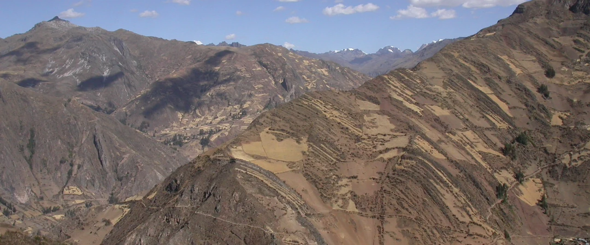

Chavín y el Formativo andino
Complejidad social, centros ceremoniales, relaciones entre unidades domésticas y monumentos, cerámica, alimentación y transformaciones políticas de larga duración.
Investigación e innovación · Educación superior · Arqueología
Directivo universitario · Profesor · Arqueólogo
Dirijo sistemas universitarios de gestión académica, investigación e innovación, al tiempo que mantengo una agenda activa de investigación en arqueología andina, cronología y patrimonio cultural. Mi experiencia ejecutiva comprende gestión académica, gobierno universitario, estrategia de investigación, integridad científica, propiedad intelectual, transferencia tecnológica y transformación institucional.
Producción científica 2026: Cerámica de Wacheqsa — aceptado, PLOS ONE · Métodos radiocarbónicos — publicado, Radiocarbon · Predicción de riesgo patrimonial — publicado, Journal of Cultural Heritage.

Soy investigador formado en Stanford y directivo universitario. Actualmente dirijo la investigación, la innovación y la sostenibilidad en la Universidad Privada del Norte, mientras desarrollo una agenda activa de investigación arqueológica y publicaciones científicas.
Mi trayectoria institucional comprende dirección académica universitaria, estrategia de investigación, gobernanza, financiamiento competitivo, propiedad intelectual, transferencia tecnológica, ética, integridad y cooperación internacional. He ejercido como vicerrector académico en dos universidades, vicerrector de investigación, decano, director ejecutivo de un vicerrectorado de investigación y director de museos en Perú y Ecuador.
Complejidad social, centros ceremoniales, relaciones entre unidades domésticas y monumentos, cerámica, alimentación y transformaciones políticas de larga duración.
Síntesis radiocarbónicas, evaluación crítica de datos cronológicos, modelamiento probabilístico, pulsos de actividad y tratamiento explícito de la incertidumbre.
Religiosidad integrada, monumentalidad, autoridad, intercambio, festines y producción institucional del poder ritual.
Geoglifos, proximidad a rutas, documentación mediante drones, paisajes de baja deposición y evaluación formal de asociaciones espaciales.
Presión urbana, pérdida de patrimonio arqueológico, predicción espacial, arqueología preventiva y gobernanza patrimonial cuantitativa.
Gobernanza institucional de la investigación, ecosistemas de innovación, transferencia tecnológica, integridad, bibliometría y sistemas de desempeño.
Publicaciones arbitradas, capítulos de libro e investigaciones en curso, organizados por tipo y tema. El filtro Chavín y Wacheqsa reúne trabajos sobre cronología, cerámica, alimentación, ocupación doméstica, festines, poder y análisis cuantitativo en Chavín de Huántar.
Los artículos publicados, los manuscritos aceptados y los capítulos de libro se distinguen de los trabajos en evaluación.
Los libros en preparación desarrollan síntesis sobre Chavín, las instituciones rituales, la monumentalidad, la cronología y la economía política del Formativo andino.
Religiosidad integrada, monumentalidad y economías políticas centro-periferia
Estudio de síntesis sobre prácticas religiosas institucionalizadas, arquitectura monumental, economía política, cronología y transformación social de larga duración en el Formativo andino.
Síntesis histórica y arqueológica de Chavín de Huántar y de su lugar cambiante en la interpretación de los Andes antiguos.
Investigación, innovación y transferencia tecnológica
He dirigido portafolios de investigación y gestión académica en universidades multidisciplinarias, con responsabilidad sobre presupuestos, desarrollo docente, calidad científica, innovación, gobernanza, integridad y cambio institucional.
Las cifras proceden del CV ejecutivo académico 2026. El liderazgo en patentes de UPN se refiere a los rankings anuales de Indecopi por patentes otorgadas.
Políticas, indicadores de desempeño, ética e integridad, sistemas de investigación docente, comités de investigación y coordinación multicampus.
Estrategia de propiedad intelectual, carteras de patentes, maduración tecnológica y transferencia universidad-empresa. En septiembre de 2026, UPN y Coopagro suscribieron un acuerdo de transferencia de CoffeeX/VisionCoffeeX con licencia no exclusiva y no comercial para validación en condiciones reales.
Alianzas de investigación y relaciones de financiamiento con Stanford, Harvard, Universidade de São Paulo, National Geographic Society, Newton Fund y Global Heritage Fund.
Programa arqueológico de larga duración que integra excavación, cronología, cerámica, arqueología doméstica, ritual y autoridad.
Chavín Programa de larga duraciónProspección, documentación con drones, asociaciones cerámicas, modelamiento espacial y análisis de proximidad a rutas en el valle medio del Chillón.
Geoglyphs Análisis espacialInvestigación sobre arquitectura de la Tradición Religiosa Kotosh en el valle de Huarmey y prácticas rituales fuera de los grandes centros ceremoniales.
Kotosh FormativeInvestigaciones microbotánicas y de residuos en utensilios culinarios de Chavín de Huántar.
Foodways ArchaeometryUniversidad Privada del Norte · Profesor
Universidad Privada San Juan Bautista
Universidad Privada San Juan Bautista
Universidad Científica del Sur
Universidad Científica del Sur
Universidad San Ignacio de Loyola
Universidad San Ignacio de Loyola
Museo Nacional de la Cultura Peruana
Casa del Alabado · Museo de Arte Precolombino, Quito
Museo Nacional de Arqueología, Antropología e Historia del Perú
Museo Nacional Chavín